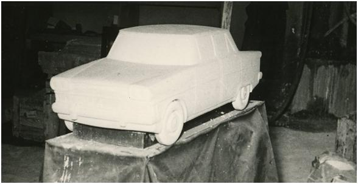
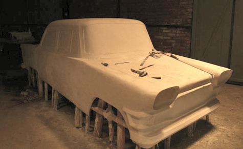
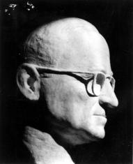
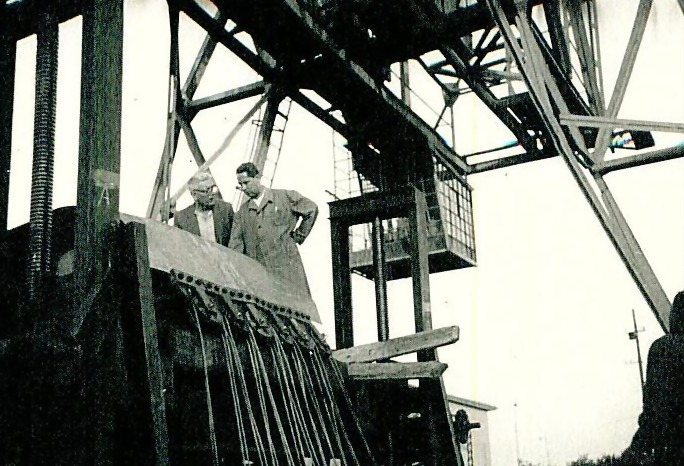
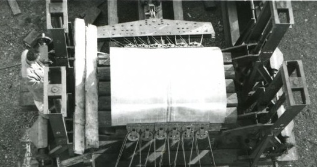
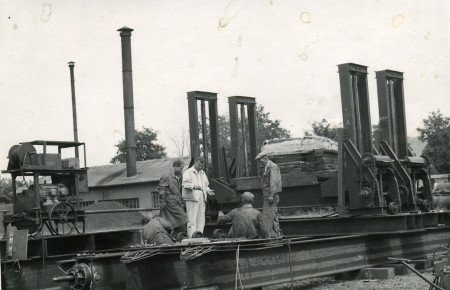

|
2.2. Styling
Cer Dairesi (*) Baþkan yardýmcýsý yüksek mühendis Nurettin Erguvanlý, yüksek mühendis Ercan Türer ve yüksek mimar Kemal Elagöz'den oluþan Styling Grubu'nun en önemli görevi aracýn "biçimi" olacaktýr (Þimþek, 2006. s72).

Þekil 3. Styling Grubunun yapýlanmasý
Ancak bu noktada en önemli soru Styling Grubu'nun aracýn "biçimi"ni nasýl yapacaðýdýr. Çünkü makine mühendisliðinin o tarihteki müfredatý ve o tarihteki mühendislik çabasý, biçim konusunda yöntem ve deneyim sahibi deðildi. Bu yüzden biçim konusundaki yöntemlerin mimarlýk disiplini ile alýnmasý planlanmýþ olmalý. Bu yüzden projeyi yürütmesi düþünülen 22 mühendis arasýna bir de mimar alýnmýþ olmalý. Ama varsayým kesin olarak ispatlanabilir deðildir çünkü bu konuda bir belge yoktur.
Styling'in belirli bir yöntem bilgisi ve tecrübesi doðrultusunda yapýldýðýný gösteren en önemli kanýt aracýn 1/10 ölçeðinde yapýlan alçý modelidir. Bu modellerin geliþtirilmesi elde bulunan Chrysler, Fiat ve Chavrolet modellerinin incelenmesi ile yapýlmýþtýr (Saðýn, 2004).

Þekil 4. Aracýn 1/10 modeli
Yapýlan birkaç 1/10 model içerisinden birisi seçilerek, 1/1 modelin yapýlma aþamasýna geçilmiþtir:
"Karoser için hazýrlanan 1/10 ölçekli maketlerden seçilen 1/1 ölçekli alçý modeli yapýldý", (Saðýn, 2004).

Þekil 5. Aracýn 1/1 modeli
Alçýdan model yapma makine mühendisliðinde kullanýlan bir yöntem olmamasýna raðmen Devrim Araba'larýnýn yapýlmasýnda kýsa sürede profesyonelce yapýlmasý bu iþlerin projede yer alan yüksek mimar Mustafa Kemal Elagöz tarafýndan yapýldýðý varsayýmýný güçlendiriyor.
Peki Mustfa Kemal Elagöz'ün bu konuda baþarýlý olabilmesi için gereken donanýma sahip olduðu nasýl söylenebilir? Mustafa Kemal Elagöz, mimarlar odasý kayýtlarýna göre 1928-2002 yýllarý arasýnda yaþamýþ, 1941 yýlýnda Güzel Sanatlar Akademisi'ne girmiþ, bugünkü adýyla Mimar Sinan Güzel Sanatlar Üniversitesi, ve buradan yüksek mimar olarak mezun olmuþtur.
Mustafa Kemal Elagöz'ün estetik ve sanatsal yönünü en doðru bir þekilde ortaya koyan eseri, 1949 yýlýnda amerikan baþkaný Harry S. Truman'a gönderdiði 7.5cm x 10cm ebatlarýndaki büstüdür:

Þekil 6. Amerikan baþkaný Truman'ýn büstü
Mustafa Kemal Elagöz'e alçý model aþamasýnda çok iþ düþmesine raðmen, biçim verme süreci diðer mühendislerin katýlýmý ile bir ekip çalýþmasý þeklinde geliþmiþtir:
"Çiziyoruz, bir biçim veriyoruz. Bir bakýyoruz, Ford'un bilmem ne modeline benzemiþ. Bir tane daha üretiyoruz. Olmadý, bu da Opel'i andýrdý. Haydi o da çöpe. Sonunda tümüyle bizim olan bir biçim üretmeyi baþardýk", (Saðýn, 2004).
Eldeki teknik olanaksýzlýklar projenin bir çok aþamasýnda deðiþik sorunlar çýkartmýþtýr. Buda araçlarýn tasarýmýný etkileyen önemli bir faktör olmuþtur. Aracýn gövdesinde kullanýlacak saclarýn basýlmasý için presler olmadýðý için bu iþlem için büyük krikolar kullanýlmýþtýr. Metal kalýp alma olanaðý olmadýðý için gövde parçalarýnýn kalýplarý alçý modelden beton kalýp almak sureti ile yapýlmýþtýr. Bu olanaksýzlýklar araç gövdesinin bombeli ve kavisli olmasýna olanak vermemiþtir.

Þekil 7. Gövde saclarýnýn beton kalýplar üzerine kriko yardýmý ile çekilmesi


(*) Cer, Arapça'da "çekmek, sürüklemek" anlamýna gelir. TCDD çalýþanlarý arasýnda ya da 1950-60 dönemi halk dilinde, lokomotiflerin teknik bakýmýnýn yapýldýðý ve yenilerinin imal edildiði fabrikalara da "cer atölyesi" denirdi, (TTAG, 2003)
|